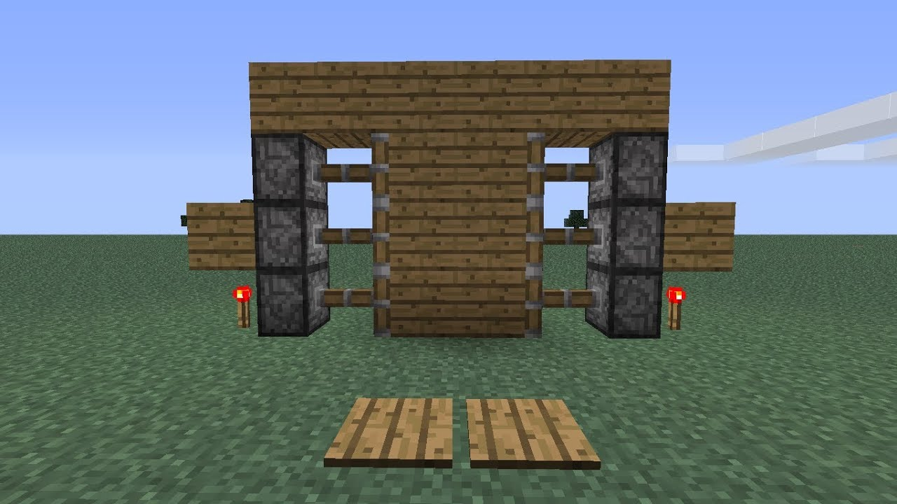

Guías Recientes
Guía de Ender Dragon
1. Introducción: El Ender Dragon es el jefe final de Minecraft, encontrado en The End.
2. Preparación: Lleva una buena armadura, un arco, muchas flechas, y pociones de fuerza y regeneración.
3. Estrategia de combate: Destruye los cristales de End que curan al dragón, usa el arco para atacar desde lejos y una espada para los ataques cuerpo a cuerpo.
4. Recompensas: Al derrotar al Ender Dragon, obtendrás una gran cantidad de experiencia y acceso al portal de salida para obtener el huevo de dragón.

Guía de Wither:
1. Introducción: El Wither es un jefe invocable mediante la construcción de una estructura específica y es uno de los enemigos más difíciles del juego.
2. Preparación: Necesitarás cabezas de Wither Skeleton y bloques de Soul Sand. Lleva armadura con resistencia al Wither, una espada poderosa y pociones de salud.
3. Estrategia de combate: Invoca al Wither en una cueva cerrada para limitar sus movimientos. Ataca con tu espada y arco, y mantén tus pociones listas para curarte.
4. Recompensas: Al derrotar al Wither, obtendrás una estrella del Nether, usada para construir un beacon.

Guía de Puerta Automática con Redstone
1. Materiales: Necesitarás redstone, pistones pegajosos, placas de presión y bloques de construcción:
2. Coloca los pistones pegajosos en ambos lados de donde estará la puerta.
3. Coloca bloques de construcción en los pistones.
4. Conecta los pistones a las placas de presión usando redstone.
Funcionamiento: Cuando pises las placas de presión, los pistones se activarán, abriendo la puerta.

Guía de Reloj de Redstone
1. Materiales: Necesitarás redstone, repetidores y una antorcha de redstone.
2. Construcción:
• Coloca cuatro repetidores en un cuadrado y conecta cada uno con redstone.
• Ajusta los repetidores para que tengan un pequeño retraso.
• Coloca una antorcha de redstone para iniciar el ciclo.
3. Funcionamiento: Este circuito generará pulsos de redstone continuos que pueden usarse para diversas máquinas, como luces intermitentes o dispensadores automáticos.
.jpg)